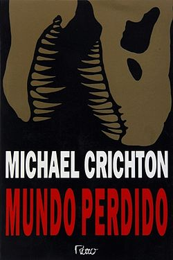

3 citações de livros marcadas recentemente por mim :
Esqueça o que te contaram sobre a rivalidade feminina.
Dê a mão a outras mulheres e assuma seu lugar no feminismo mais cedo.
Dias de luta. - Se não fosse por você eu não estaria aqui
A morte não é a única punição que se pode causar a uma pessoa.
Também é possível lhe dar pesadelos. - Destinos Divididos
Os cavalheiros são livres para voar na direção que quiserem,
ao passo que as damas parecem belas aves raras, aprisionadas em suas gaiolas,
como se não sentissem o mesmo desejo de experimentar o sabor da liberdade. - Desencantada
Livro que eu estou lendo agora :

Jurassic Park - 2 ||
Por Referência Relativa.
Próximo livro que vou ler :
Conto - Machado de Assis ||
Por Referência Absoluta.
Para ficar mais por dentro das minhas leituras, acompanhe meu skoob :
Tabela dos doramas e países que eu assisti em 2021 até agora :
Nome
País
Goblin
Coreia do Sul
Good Morning Call
Japão
Boys Over Flowers
Coreia do Sul
It's okay to not to be okay
Coreia do Sul
A estrela mais brilahnte do céu
China
Que me encontrar? Siga o seguinte endereço :
Vire na segunda estrela à direita e siga em frente até o amanhecer
Terra do Nunca